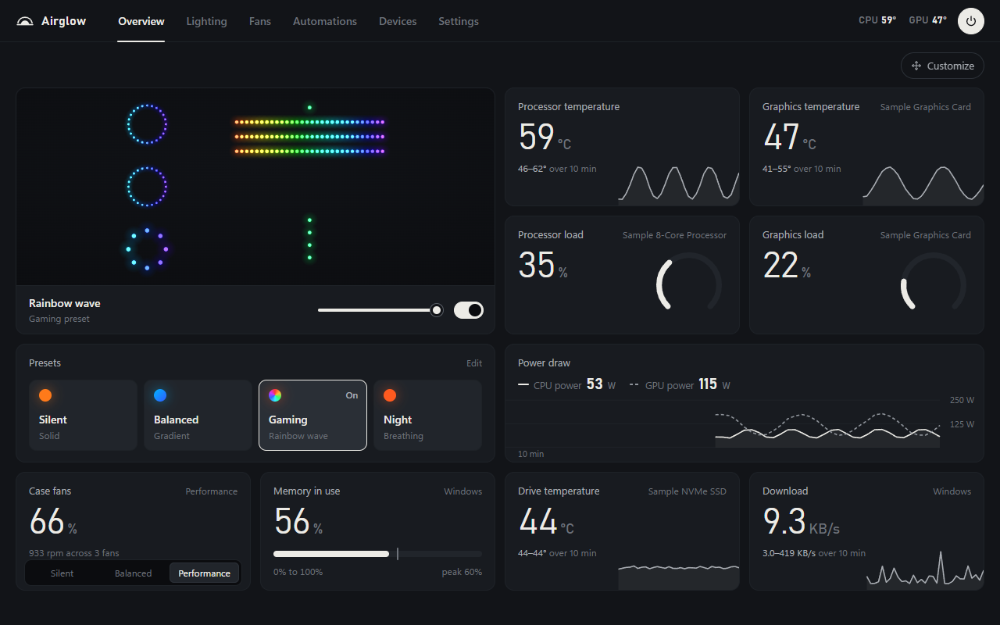
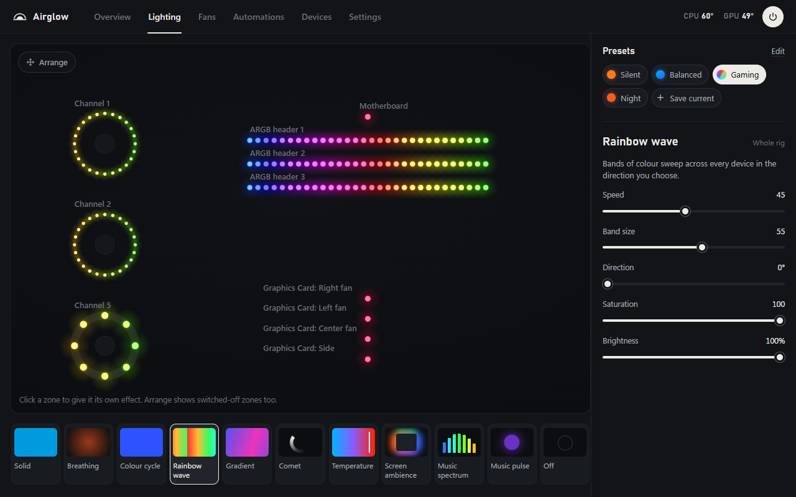
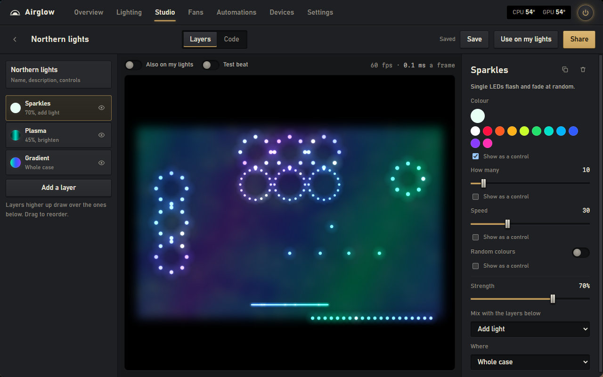
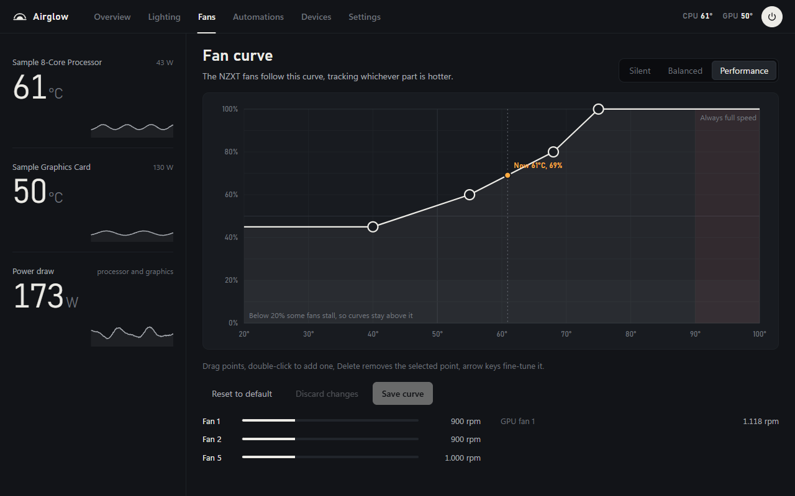
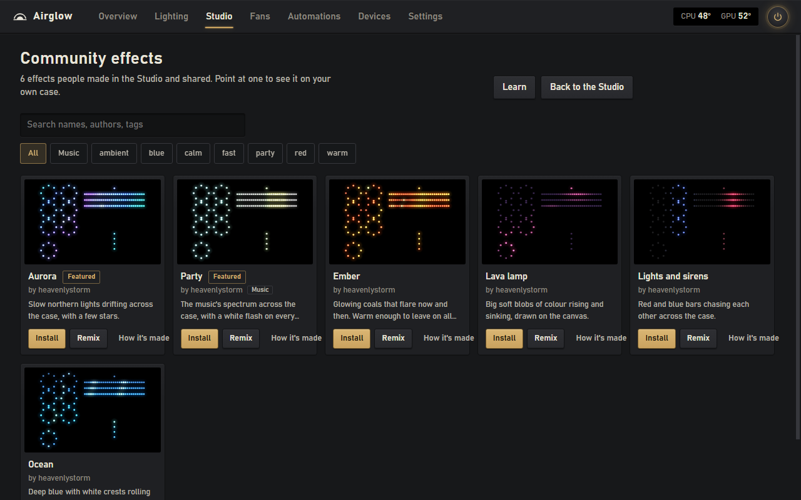

01
RGB lighting
Fans, strips, memory, graphics cards, keyboards and mice. Direct USB for NZXT and ASUS, and everything else through OpenRGB. Effects run across the whole case, and six interface designs change the app, not your lights.
Windows 10 & 11 / free & open source / MIT
Airglow runs the lights, fan curves and sensor readouts of a Windows PC from one app. It drives NZXT and ASUS controllers directly, uses OpenRGB for the rest of the lighting, and LibreHardwareMonitor for temperatures and motherboard fans.

One app, not a stack
Lighting, fan curves, temperatures, profiles and automations. One window, one profile list.
Lighting / fans / sensors
01
Fans, strips, memory, graphics cards, keyboards and mice. Direct USB for NZXT and ASUS, and everything else through OpenRGB. Effects run across the whole case, and six interface designs change the app, not your lights.
02
Curves for the processor, graphics card, coolant or whichever is hottest. NZXT hubs, motherboard headers and AIO pumps through LibreHardwareMonitor. A 20 % floor, full speed at 90 °C, and a failsafe if a sensor drops.
03
CPU and GPU temperatures, load, package power, memory, drives and network. History graphs, a Cost per hour tile at your own tariff, and a pin for any reading.
Why one app
A mixed PC usually runs a vendor controller app, an RGB app for everything else, and a separate fan tool. Airglow covers the shared ground: lights, fan curves and sensors in one window, with one profile list and one automation list.
It is not a clone of each vendor app. It drives NZXT and ASUS controllers directly and leans on OpenRGB and LibreHardwareMonitor for the rest. If you only need fan curves, FanControl is still the dedicated tool.
No mockups




USB / OpenRGB / LibreHardwareMonitor
| Direct USB | NZXT Control Hub and ASUS Aura USB motherboard controllers. Experimental: NZXT RGB & Fan Controller, Smart Device V2, HUE 2 and additional ASUS Aura controllers. |
|---|---|
| Through OpenRGB | Memory, graphics cards, keyboards, mice, strips and coolers that OpenRGB supports. ARGB headers it splits into fans show up as fan rings; keyboards as a grid. |
| Through LibreHardwareMonitor | Motherboard fan headers and the pumps and fans of many AIO coolers, including NZXT Kraken, MSI CoreLiquid, Aquacomputer, Arctic and Razer controllers, plus every sensor it reports. |
| Windows Dynamic Lighting | Keyboards, mice and accessories with HID LampArray support. Off by default and experimental, because Windows only lets the app light them while its window is in front. |
Install
Download the installer. It installs for your Windows user, so there is no admin prompt, and it starts with Windows.
Close other RGB software. SignalRGB, iCUE, NZXT CAM and Armoury Crate can fight over the same LEDs. Airglow spots the usual ones and offers to close them.
Open Airglow and set up your lights. The welcome screen offers to install LibreHardwareMonitor and OpenRGB, then each header blinks while you tell Airglow what is plugged in where.
FAQ
Yes. Airglow is MIT licensed and free, with no account, subscription or paid tier. The source is on GitHub.
Airglow covers the lighting and fan-control parts of those suites. It drives NZXT and ASUS USB controllers directly and uses OpenRGB for other RGB devices. It is not a full replacement for every vendor-specific feature, so close the other RGB software while Airglow is running.
Yes. Airglow supports Windows 10 (1809 or newer) and Windows 11. It uses the WebView2 runtime, which is included with Windows 11 and usually comes with Edge on Windows 10; the installer adds it if it is missing.
No. There is no telemetry and no account. Airglow goes online only for the update check, the community galleries while they are open, and downloading LibreHardwareMonitor and OpenRGB when you ask it to.
Yes, through LibreHardwareMonitor. Airglow can drive motherboard fan headers and the pumps and fans of many AIO coolers, including NZXT Kraken, MSI CoreLiquid and Aquacomputer. Graphics-card fans stay with the card.
Airglow listens only on 127.0.0.1, and API writes need a header websites cannot send. Studio effects run sandboxed: they can say what colour each LED should be, and nothing else. There is no telemetry. See SECURITY.md.